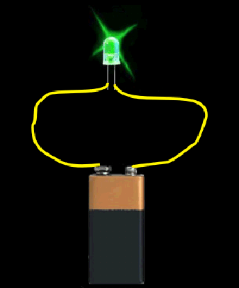
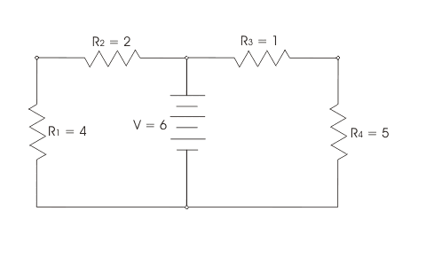
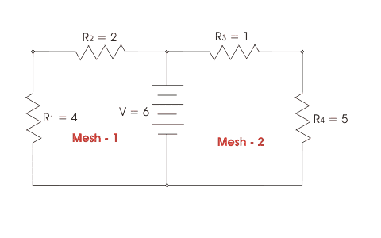
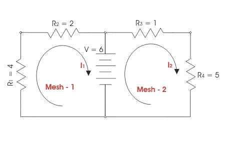
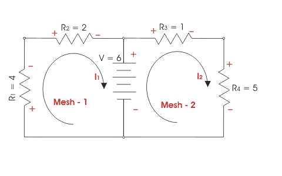

Definition of Mesh Network
The smallest unit of loop within which no other closed loop exists, is called mesh. All electrical closed networks either consist of single closed loop or a number of closed loops within them. Thus it can be easily said that every closed electrical network is mesh network. If any electrical network consists of only one single closed loop is referred as single mesh network, on the other hand if the network has more than one closed circuital loops, the network is referred as multi mesh network.
What is Mesh?
Suppose you have an electric source such as a dry battery cell, a LED and two pieces of conducting wire. If you want to make the LED to glow, the positive terminal of the battery must be connected with one lead of LED by means of one conducting wire and in same way the negative terminal of the battery must be connected to other lead of LED via another conducting wire.

If you disconnect any of the points in that closed network , the LED will not glow; that means electric current can only flow through the LED as long as the continuity of the circuit exists. The battery , then wire, then LED, then another wire and then again battery form a closed loop and electric current only flows as long as the loop remains closed. This loop is known as a mesh. The network formed is a single mesh network. Again if two LEDs are connected in same manner across the battery , you can see that there would be two closed loops formed as shown in the figure. Every loop is referred as a mesh and the latter network is referred as multi mesh network.
The figure shown below has 6 nodes, five branches, three loops and two meshes.
Multi Mesh
Mesh Analysis
In this technique of circuit analysis, we have to write KVL or Kirchhoff Voltage Law for every possible mesh in a mesh network. In these equations, there may be some known terms and there may be some unknown terms. By solving these equations, we can derive the unknown terms. Mesh analysis is one of the simplest and easiest techniques of solving network.
By applying KVL ⇒ ∑V = 0 in every closed loop in a circuit. That means, arithmetic sum of total voltage gains and drops in a closed loop in a circuit is zero.
Let's consider a network having a voltage source (here it is battery ) of 6 V across which two series combinations resistors of R1 = 4 Ω, R2 = 2 Ω and R3 = 1 Ω, R4 = 5 Ω respectively are connected as shown in the figure - 1. Now we will discuss the mesh technique in step by step manner for the example given in the figure - 1 for better understanding the method.

Step - 1
As we have explained earlier that every complete network is mesh network, so for mesh analysis first we have to identify the possible meshes in that network. There are two meshes i.e. mesh -1 formed by R1, R2, V and mesh - 2 formed by V, R3, R4.

Step - 2
Now choose two mesh currents one for mesh - 1 and say it is I1 and other is for mesh - 2 and say it is I2. The direction of these two currents may be taken as arbitrary but it is better convention to choice both electric current in same direction. Here we have chosen both currents I1 and I2 are in clockwise direction.

Step - 3
Next step is to identify the polarities of each element connected in the mesh. The polarities of voltage drops must be positive at upstream end and negative at downstream end of a resistor. Generally we mark + at terminal where current enters in the resistor. The battery polarities should be as orientations given in the diagram

Step - 4
Now for mesh analysis we will apply Kirchoff's voltage law and generate voltage equation for each mesh in that mesh network.
Here the mesh equations are-
After putting the values of R1, R2, R3, R4 and V in the equations (i) and (ii) we get,
The value of current I1 becomes negative which implies that the actual direction of electric current in the circuit was opposite of our assumption of mesh electric current for mesh - 1. As the value of electric current I2 is positive, that means the direction of actual current and assumed mesh electric current match.
 by
by {kind=link}
{kind=link}
{kind=link}
{kind=link}